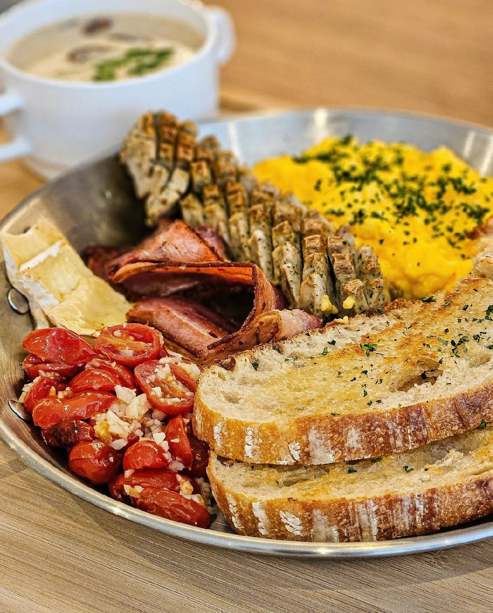
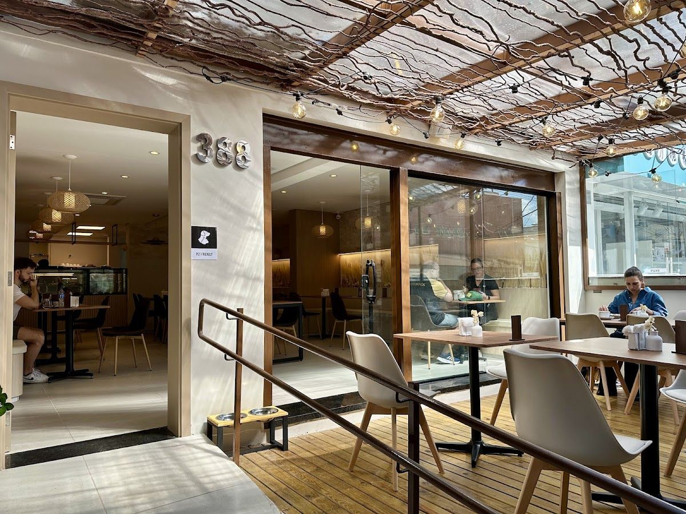
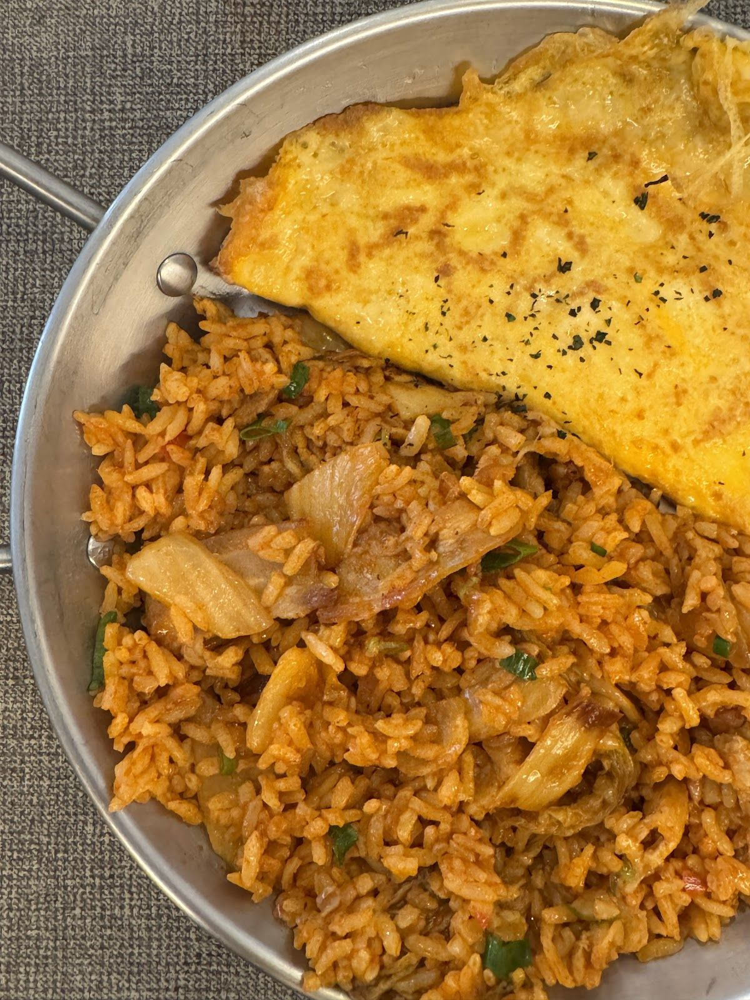
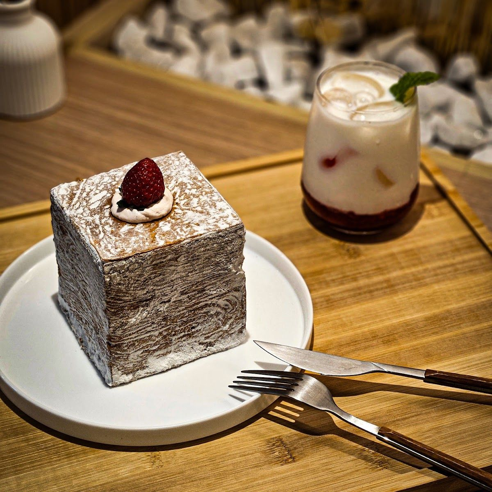
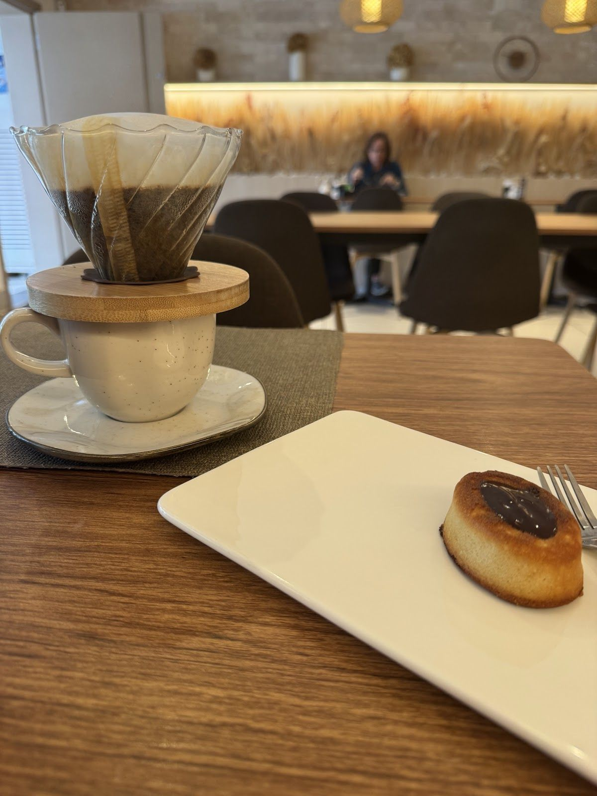

Padaria Artesanal · Brunch & Café · Perdizes
Pão de fermentação natural, brunch e café em Perdizes
Café da manhã sem pressa, uma pausa no meio do dia ou um brunch para uma boa conversa. Na Noul, a padaria artesanal encontra a cozinha coreana, todos os dias, na Rua Monte Alegre.
- Pães de fermentação natural
- Cozinha coreana
- Pet friendly
- R. Monte Alegre, 388 · Perdizes
Destaques
O que você encontra na Noul
Pães de fermentação natural
Pães artesanais feitos com fermentação natural, para a mesa do café ou para levar para casa.
Brunch e café
Do café da manhã ao fim da tarde, opções de brunch e cafés para aproveitar sem pressa.
Almoço e bebidas coreanos
Pratos e bebidas de inspiração coreana, que dão um sabor próprio ao cardápio da casa.
Pet friendly
A Noul recebe você e o seu pet.


Sobre
Sobre a Noul
A Noul Padaria Brunch & Café é uma padaria artesanal em Perdizes, São Paulo. A casa reúne padaria, café e brunch em um só endereço, pensado para diferentes momentos do dia: o café da manhã com calma, a pausa da tarde ou o encontro com amigos. Os pães são de fermentação natural, e o cardápio passa pelo almoço, pelo brunch e pelas bebidas de inspiração coreana. Seu pet também é bem-vindo.
Padaria artesanal, brunch e café — para cada momento do seu dia.
Pedidos
Na mesa ou em casa
Venha à Noul para um café ou um brunch com calma, ou chame no WhatsApp para tirar dúvidas e consultar o cardápio. Para receber em casa, a Noul também está no iFood.
- 1
Chame no WhatsApp ou ligue para (11) 94309-0034, ou peça pelo iFood.
- 2
Conte o que você procura — pães, brunch, almoço ou bebidas.
- 3
Combine os detalhes com a equipe.
- Entrega própria, retirada, encomendas e pagamento
- Consulte pelo WhatsApp
4,5 no Google · 403 avaliações
Conte como foi a sua visita
Já passou pela Noul? Sua avaliação no Google ajuda outras pessoas a nos conhecer e nos ajuda a receber cada vez melhor.
Avaliar no GoogleContato
Onde estamos
Horário
Segunda a sexta: 07h30 às 19h
Sábado e domingo: 08h às 17h
Feriados: consulte pelo WhatsApp
Fale com a gente
- WhatsApp: (11) 94309-0034
- Telefone: (11) 94309-0034
- Instagram: @noul.padaria
- Pedidos on-line: iFood
Uma pausa sem pressa?
Pães de fermentação natural, brunch e café, na Rua Monte Alegre, em Perdizes. Venha nos visitar ou fale com a Noul pelo WhatsApp.